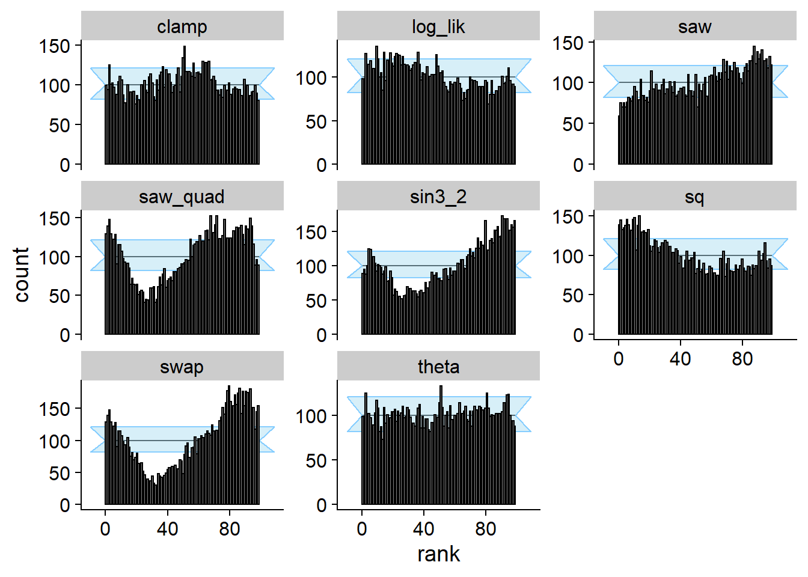
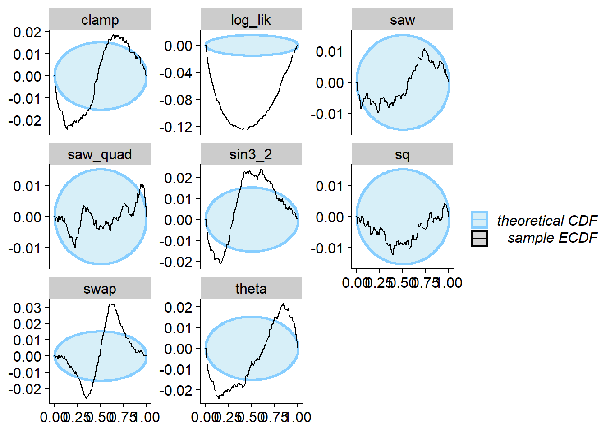
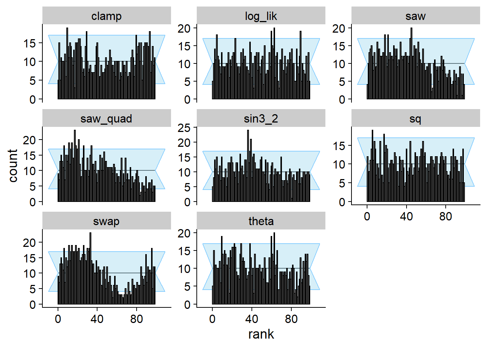
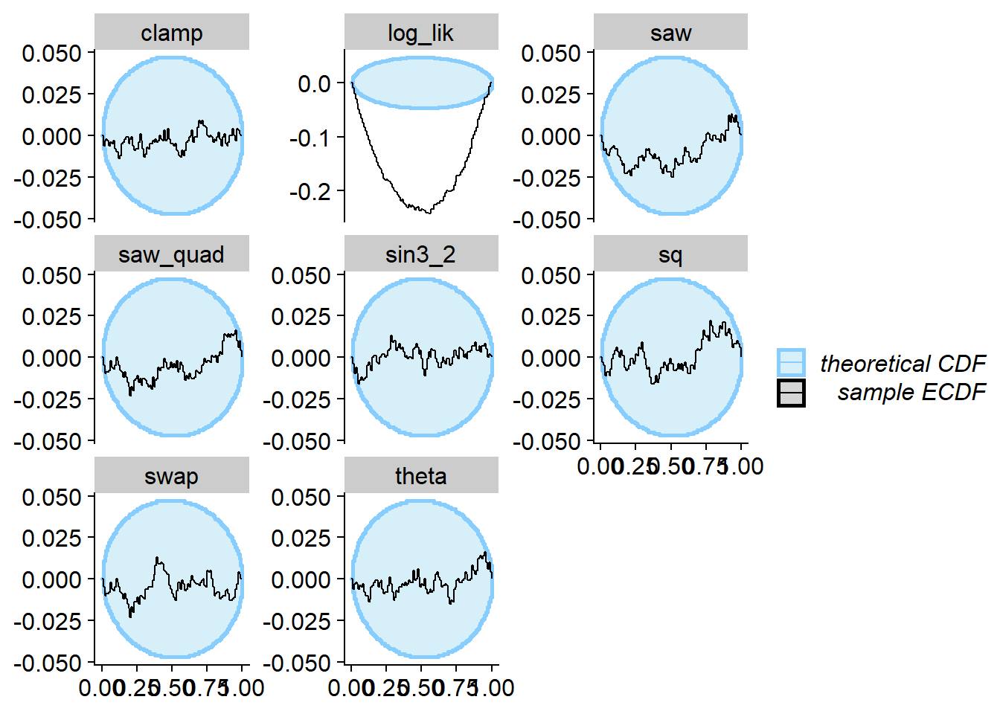

Simple Bernoulli Examples
Abstract
This R Markdown document runs the simulations accompanying Examples 1 - 5 in Appendix B of paper ‘Simulation-Based Calibration Checking for Bayesian Computation: The Choice of Test Quantities Shapes Sensitivity’The examples are run using the SBC R package. - consult the Getting Started with SBC vignette for basics of the package. We will also use “custom backends” which are discussed and explaiend in the Implementing a new backend.
knitr::opts_chunk$set(cache = TRUE)
library(SBC)
library(tidyverse)
library(patchwork)
library(future)
plan(multisession)
theme_set(cowplot::theme_cowplot())
# Setup cache
cache_dir <- "./_SBC_cache_bernoulli"
if(!dir.exists(cache_dir)) {
dir.create(cache_dir)
}Recall that the model is:
\[ \begin{align} \Theta &:= \mathbb{R} \notag\\ Y &:= \{0,1\} \notag\\ \theta &\sim \mathrm{uniform}(0,1) \notag\\ y &\sim \mathrm{Bernoulli}(\theta) .\label{eq:bernoulli_model} \end{align} \]
First, we generate a large number of datasets:
set.seed(1558655)
N_sims_simple <- 1000
N_sims_simple_large <- 10000
N_samples_simple <- 100
variables_simple <- runif(N_sims_simple_large)
generated_simple <-
purrr::map(variables_simple, ~ list(y = rbinom(1, size = 1, .x)))
ds_large <- SBC_datasets(variables = posterior::draws_matrix(theta = variables_simple),
generated = generated_simple)
ds <- ds_large[1 : N_sims_simple]We then create two simple classes of SBC backends. First
(my_backend_func) just uses one function to generate
samples when \(y = 0\) and another when
\(y = 1\). The second one
(my_backend_func_invcdf) is very similar, but takes the
inverse CDF functions for \(y = 0\) and
\(y = 1\) as input.
my_backend_func <- function(func0, func1) {
structure(list(func0 = func0, func1 = func1), class = "my_backend_func")
}
SBC_fit.my_backend_func <- function(backend, generated, cores) {
if(generated$y == 0) {
posterior::draws_matrix(theta = backend$func0())
} else if (generated$y == 1) {
posterior::draws_matrix(theta = backend$func1())
} else {
stop("Invalid")
}
}
SBC_backend_iid_draws.my_backend_func <- function(backend) {
TRUE
}
my_backend_func_invcdf <- function(invcdf0, invcdf1) {
structure(list(invcdf0 = invcdf0, invcdf1 = invcdf1), class = "my_backend_func_invcdf")
}
SBC_fit.my_backend_func_invcdf <- function(backend, generated, cores) {
if(generated$y == 0) {
posterior::draws_matrix(theta = backend$invcdf0(runif(N_samples_simple)))
} else if (generated$y == 1) {
posterior::draws_matrix(theta = backend$invcdf1(runif(N_samples_simple)))
} else {
stop("Invalid")
}
}
SBC_backend_iid_draws.my_backend_func_invcdf <- function(backend) {
TRUE
}
my_globals <- c("SBC_fit.my_backend_func", "SBC_backend_iid_draws.my_backend_func", "SBC_fit.my_backend_func_invcdf",
"SBC_backend_iid_draws.my_backend_func_invcdf", "N_samples_simple")Finally, we set a range of test quantities to monitor:
gq_simple <- derived_quantities(
log_lik = dbinom(y, size = 1, prob = theta, log = TRUE),
sq = (theta - 0.5) ^ 2,
sin3_2 = sin(3/2 * pi * theta),
saw = ifelse(theta < 1/2, theta, -1/2 + theta),
swap = ifelse(theta < 1/2, theta, theta - 1),
saw_quad = ifelse(theta < 1/2, theta^2, -1/2 + theta^3),
clamp = ifelse(theta < 1/2, theta, 1/2)
# CRPS was suggested, but seems not really useful
# Following equation (8) at https://arxiv.org/pdf/2002.09578v1.pdf for CRPS
# CRPS = (1 - dbinom(y, size = 1, prob = theta)) - 0.5 * dbinom(1, size = 2, prob = theta)
)Correct posterior
Setup a backend using the correct analytic posterior - it passes SBC including all GQs
backend_ok <- my_backend_func(
func0 = rlang::as_function(~ rbeta(N_samples_simple, 1, 2)),
func1 = rlang::as_function(~ rbeta(N_samples_simple, 2, 1)))
res_ok <- compute_SBC(ds, backend_ok, keep_fits = FALSE,
dquants = gq_simple, globals = my_globals,
cache_mode = "results",
cache_location = file.path(cache_dir, "ok")
)## Results loaded from cache file 'ok'plot_rank_hist(res_ok)plot_ecdf_diff(res_ok)Example 1 - Projection
We now demonstrate some incorrect posteriors that however satisfy SBC
w.r.t. the projection function (\(f_1\)
in the paper, theta in the code and plots here). The
counterexamples are most naturally expressed vie inverse CDFs, so for
this and all the following examples, we will show the inverse CDFs. For
the first counterexample we will take \(\Phi^{-1}(x | 0) = x^2\) and then use the
formula \(\Phi^{-1}(x | 1) = \sqrt{2x +
(\Phi^{-1}(x | 0) - 1)^2 - 1}\) to calculate the other inverse
CDF.
invcdf_ex1_square_0 <- function(u) {
u^2
}
invcdf_ex1_square_1 <- function(u) {
sqrt(u * (2-2*u+u^3))
}This is how the inverse CDFs of the counterexample compare to the correct ones - the top two panels show the actual inverse CDFs and the bottom two panels the difference from the correct CDF.
plot_invcdfs <- function(invcdf0, invcdf1, name) {
u <- seq(from = 0, to = 1,length.out = 100)
plot1 <- rbind(data.frame(y = 0, u = u, invphi = invcdf0(u), type = name),
data.frame(y = 1, u = u, invphi = invcdf1(u), type = name),
data.frame(y = 0, u = u, invphi = 1 - sqrt(1 - u), type = "Correct"),
data.frame(y = 1, u = u, invphi = sqrt(u), type = "Correct")
) %>%
ggplot(aes(x = u, y = invphi, color = type)) + geom_line(size = 2) + facet_wrap(~y, labeller = label_both) +
scale_y_continuous("Inverse CDF of theta") +
scale_x_continuous("Quantile")
plot2 <-
rbind(data.frame(y = 0, u = u, invphi_diff = invcdf0(u) - ( 1 - sqrt(1 - u)), type = name),
data.frame(y = 1, u = u, invphi_diff = invcdf1(u) - sqrt(u), type = name),
crossing(y = c(0,1), u = u, invphi_diff = 0, type = "Correct")) %>%
ggplot(aes(x = u, y = invphi_diff, color = type)) + geom_line(size = 2) + facet_wrap(~y, labeller = label_both) +
scale_y_continuous("Diff. inverse CDF of theta") +
scale_x_continuous("Quantile")
plot1 / plot2
}
plot_invcdfs(invcdf_ex1_square_0, invcdf_ex1_square_1, "Example 1 - Square")Now we can run SBC. We see that for theta SBC passes
with no problems while for all the other test quantities it fails.
backend_ex1_square <- my_backend_func_invcdf(invcdf_ex1_square_0, invcdf_ex1_square_1)
res_ex1_square <- compute_SBC(ds_large, backend_ex1_square, keep_fits = FALSE,
dquants = gq_simple, globals = my_globals,
cache_mode = "results",
cache_location = file.path(cache_dir, "ex1_square"))## Cache file exists but the backend hash differs. Will recompute.plot_rank_hist(res_ex1_square)
plot_ecdf_diff(res_ex1_square)Example 2 - Projection and Data-Averaged Posterior
Flipped 0 and 1 outcomes
Here we take the correct posterior and flip the functions for 0 and
1. In paper, this is designated as \(\phi_A\). This still satisfies the
“data-averaged posterior = prior” condition but actually fails SBC for
the projection function (i.e. the theta subplot) and many
other test quantities. Interestingly, the sq quantity is
completely insensitive to this flipping, because it is symmetric to
flips in theta around \(\frac{1}{2}\).
backend_flip <- my_backend_func(
func0 = rlang::as_function(~ rbeta(N_samples_simple, 2, 1)),
func1 = rlang::as_function(~ rbeta(N_samples_simple, 1, 2)))
res_flip <- compute_SBC(ds, backend_flip, keep_fits = FALSE,
dquants = gq_simple, globals = my_globals)
plot_rank_hist(res_flip)plot_ecdf_diff(res_flip)Satisfy SBC, fail data-averaged posterior
Now, we recreate the example denoted \(\Phi_B\) in the paper - we take
\[ \Phi^{-1}_B(x | 0) := \begin{cases} \frac{2}{3}x & x < \frac{3}{4} \\ \frac{1}{2} + 2(x - \frac{3}{4}) & x \geq \frac{3}{4} \\ \end{cases} \\ \]
and then use the formula \(\Phi^{-1}(x | 1) = \sqrt{2x + (\Phi^{-1}(x | 0) - 1)^2 - 1}\) to calculate the other inverse CDF.
invcdf_phiB_0 <- function(u) {
ifelse(u < 3/4, (2/3) * u, 0.5 + (u - 0.75)*2)
}
invcdf_phiB_1 <- function(u) {
ifelse(u < 3/4, (1/3) * sqrt(2) * sqrt(u * (3 + 2 * u)), sqrt(3 - 6*u + 4*u^2))
}
plot_invcdfs(invcdf_phiB_0, invcdf_phiB_1, "Example 2 - phiB")Let’s run SBC. As designed, no problem with theta
(projection function), but many test quantities signal problems.
backend_phiB <- my_backend_func_invcdf(invcdf_phiB_0, invcdf_phiB_1)
# We use a bit more simulations to clearly show some of the problems
res_phiB <- compute_SBC(ds_large[1:2500], backend_phiB, keep_fits = FALSE,
dquants = gq_simple, globals = my_globals,
cache_mode = "results",
cache_location = file.path(cache_dir, "phiB")
)## Cache file exists but the backend hash differs. Will recompute.plot_rank_hist(res_phiB)plot_ecdf_diff(res_phiB)Linear combinations
Here we take a linear combination of the prior and posterior (both
passing SBC and data-averaged posterior for theta - the
projection function). This is denoted as \(\Phi_C\) in the paper. Note that this does
not quite strongly pass SBC for theta (the projection
function) as well as many other quantities.
invcdf_lincomb_0 <- function(u) {
1.5 - 0.5 * sqrt(9 - 8 * u)
}
invcdf_lincomb_1 <- function(u) {
-0.5 + 0.5 * sqrt(1 + 8 * u)
}
plot_invcdfs(invcdf_lincomb_0, invcdf_lincomb_1, "Linear combination")backend_lincomb <- my_backend_func_invcdf(invcdf_lincomb_0, invcdf_lincomb_1)
res_lincomb <- compute_SBC(ds_large, backend_lincomb, keep_fits = FALSE,
dquants = gq_simple,
globals = my_globals,
cache_mode = "results",
cache_location = file.path(cache_dir, "lincomb"))## Cache file exists but the backend hash differs. Will recompute.plot_rank_hist(res_lincomb)plot_ecdf_diff(res_lincomb)
Example 3 - Likelihood
Now let us simulate posteriors passing SBC w.r.t. the likelihood (denoted \(f_2\) in the paper).
Passing SBC just for likelihood
Here we will use \(\Phi^{-1}(x | 1) = 1 - (1 - x)^2\) and then use the formula \(\Phi^{-1}(1 - x | 0) = 1 - \sqrt{2x - (\Phi^{-1}(x|1) ^ 2)}\) to complete the posterior.
invcdf_lik1_0 <- function(u) {
#1 - sqrt((1 - u))
#1 - sqrt(2*(1-u) - invcdf_lik1_1(1-u) ^ 2)
1 - sqrt(1-u*(2 - 2*u + u^3))
}
invcdf_lik1_1 <- function(u) {
1 - (1 - u)^2
}
plot_invcdfs(invcdf_lik1_0, invcdf_lik1_1, "Example 3 - Likelihood 1")And we can compute SBC - note that this posterior passes SBC for the
likelihood (log_lik), but it does not pass it for
theta and many other quantities.
backend_lik1 <- my_backend_func_invcdf(invcdf_lik1_0, invcdf_lik1_1)
res_lik1 <- compute_SBC(ds, backend_lik1, keep_fits = FALSE,
dquants = gq_simple, globals = my_globals,
cache_mode = "results",
cache_location = file.path(cache_dir, "loglik1"))## Cache file exists but the backend hash differs. Will recompute.plot_rank_hist(res_lik1)
plot_ecdf_diff(res_lik1)Passing SBC for both projection and likelihood
We can construct counterexamples that satisfy both theta
and log_lik, the full formula is in the paper here is one,
starting from \(0 < x < \frac{1}{2}:
\Phi^{-1}(x | 0) = 2 (2 - \sqrt{2}) u^2\) and computing the rest
as needed:
invcdf_loglik2_0 <- function(u) {
ifelse(u < 0.5, u^2 * 2 *(2 - sqrt(2)),
1 - 2 * abs(u - 1) * sqrt(-4 + 3 * sqrt(2) + (-6 + 4*sqrt(2)) * (u -2) * u)
)
}
invcdf_loglik2_1 <- function(u) {
ifelse(u < 0.5, sqrt(2 * u *(1 + 2*u *(-2 + sqrt(2) + (6 - 4*sqrt(2)) * u^2))),
sqrt(-17 + 12 * sqrt(2) + 2 * u * (41 - 28 * sqrt(2) + 2 * u * (-34 + 23 * sqrt(2) + (-6+4*sqrt(2)) * (u - 4) * u))))
}
plot_invcdfs(invcdf_loglik2_0, invcdf_loglik2_1, "Example 3 - likelihood 2")## Warning in sqrt(-17 + 12 * sqrt(2) + 2 * u * (41 - 28 * sqrt(2) + 2 * u * : NaNs produced
## Warning in sqrt(-17 + 12 * sqrt(2) + 2 * u * (41 - 28 * sqrt(2) + 2 * u * : NaNs producedThe SBC for both theta and log_lik passes.
All the other quantities however do show the failure. This shows the
space of useful quantities is not exhausted by a univariate marginal
distribution and the (log)likelihood and that non-monotonous
transformation of the univariate marginal can provide additional power
to SBC.
backend_loglik2 <- my_backend_func_invcdf(invcdf_loglik2_0, invcdf_loglik2_1)
res_loglik2 <- compute_SBC(ds, backend_loglik2, keep_fits = FALSE,
dquants = gq_simple, globals = my_globals,
cache_mode = "results",
cache_location = file.path(cache_dir, "loglik2"))## Cache file exists but the backend hash differs. Will recompute.plot_rank_hist(res_loglik2)plot_ecdf_diff(res_loglik2)Example 4 - Non-monotonous bijection
Now, we try to build incorrect posterior satisfying SBC for the
swap test quantity (called \(f_3\) in the paper). Here, we start once
again with \(\Phi^{-1}(x | 0) = x^2\)
and then use the formula
$$
to create a posterior passing SBC.
invcdf_swap_0 <- function(u) {
u^2
}
invcdf_swap_1 <- function(u) {
h0 <- uniroot(function(x) { invcdf_swap_0(x) - 1/2 }, c(0,1))$root
stopifnot(abs(invcdf_swap_0(h0) - 1/2) < 1e-6)
f_h1_larger <- function(h1) {
#\Phi^{-1}(1 - h_1 + h_0 | 0) = 1 - \sqrt{2h_1 - 1}
invcdf_swap_0(1 - h1 + h0) - 1 + sqrt(2*h1 - 1)
}
f_h1_smaller <- function(h1) {
#\Phi^{-1}(h_0 - h_1 | 0) = 1 - \sqrt{2h_1}
invcdf_swap_0(h0 - h1) - 1 + sqrt(2*h1)
}
h1_larger_low <- 1/2
h1_larger_high <- 1 - h0
h1_smaller_low <- 0
h1_smaller_high <- h0
if(h1_larger_low >= h1_larger_high) {
h1_larger_sign_diff <- FALSE
} else {
h1_larger_sign_diff <- sign(f_h1_larger(h1_larger_low)) != sign(f_h1_larger(h1_larger_high))
}
if(h1_smaller_low >= h1_smaller_high) {
h1_smaller_sign_diff <- FALSE
} else {
h1_smaller_sign_diff <- sign(f_h1_smaller(h1_smaller_low)) != sign(f_h1_smaller(h1_smaller_high))
}
if(h1_larger_sign_diff == h1_smaller_sign_diff) {
stop("Both sign diffs")
} else if(h1_larger_sign_diff) {
h1 <- uniroot(f_h1_larger, c(h1_larger_low,h1_larger_high))$root
} else {
h1 <- uniroot(f_h1_smaller, c(h1_smaller_low,h1_smaller_high))$root
}
hbar <- h1 - h0
valp1 <- invcdf_swap_0(u + 1 - hbar)
val0 <- invcdf_swap_0(u - hbar)
valm1 <- invcdf_swap_0(u - 1 - hbar)
dplyr::case_when(u < hbar ~ sqrt(valp1^2 - 2 * valp1 + 2 * (u + 1 - hbar - h0)),
u < 1 + hbar ~ sqrt((val0 - 1)^2 + 2 *( u - hbar - h0)),
TRUE ~ sqrt(valm1^2 - 2 * valm1 + 2 * (u - hbar - h0))
)
}
plot_invcdfs(invcdf_swap_0, invcdf_swap_1, "Example 4 - swap")## Warning in sqrt((val0 - 1)^2 + 2 * (u - hbar - h0)): NaNs produced## Warning in sqrt(valm1^2 - 2 * valm1 + 2 * (u - hbar - h0)): NaNs produced## Warning in sqrt((val0 - 1)^2 + 2 * (u - hbar - h0)): NaNs produced## Warning in sqrt(valm1^2 - 2 * valm1 + 2 * (u - hbar - h0)): NaNs producedAnd we run SBC - no problems are seen for swap, while
other quantities do show the problem.
backend_swap <- my_backend_func_invcdf(invcdf_swap_0, invcdf_swap_1)
res_swap <- compute_SBC(ds_large, backend_swap, keep_fits = FALSE,
dquants = gq_simple, globals = c(my_globals, "invcdf_swap_0"),
cache_mode = "results",
cache_location = file.path(cache_dir, "swap"))## Cache file exists but the backend hash differs. Will recompute.plot_rank_hist(res_swap)plot_ecdf_diff(res_swap)
Example 5 - Ties, continuous
Finally, we’ll use what’s called \(f_4\) in the paper and which is called
clamp in our plots. That is collapsing a range of values
into a single number:
$$
The overall idea is that we can pick \(h_0 = \Phi(\frac{1}{2} | 0)\), compute \(h_1 = \Phi(\frac{1}{2} | 1) = \frac{5 h_0 - 4}{8 h_0 - 7}\) and then \(\Phi^{-1}(x | 0)\) for \(x < \min\{h_0, h_1\}\) quite freely. The problem is that we need to ensure that \(\Phi^{-1}(h_y | y) = \frac{1}{2}\) which introduces some complications - see the paper for details.
Here we take \(\Phi^{-1}(x | 0) = a x^{1.5}\) for \(x < \min\{h_0, h_1\}\) and suitable \(a\).
invcdf_clamp_base <- function() {
#h0 and basefunc can be +/- freely chosen
# The basefunc will be appropriately scaled to meet the conditions implied
# by the choice of h0 (i.e. to ensure invphi(h[y] | y) = 1/2)
# h0 <- 5/8
# base_func <- function(x) { x }
h0 <- 0.5
base_func <- function(x) { x^1.5 }
stopifnot(h0 < 4/5)
h1 <- (5*h0 - 4) / (8 *h0 - 7)
stopifnot( 1/8 < h1 && h1 < 1)
if(h0 < h1) {
stopifnot(h0 >= 3/8 && h0 < 1/2)
scale = 0.5 / base_func(h0)
} else {
stopifnot(h0 >= 1/2 && h0 < 25/32)
scale = (1 - 0.5 * sqrt(3/(7 - 8 * h0))) / base_func(h1)
}
list(
h0 = h0,
h1 = h1,
f = function(x) { base_func(x) * scale }
)
}
invcdf_clamp_0 <- function(u) {
base <- invcdf_clamp_base()
h0 <- base$h0
h1 <- base$h1
dplyr::case_when(u <= h0 & u < h1 ~ base$f(u),
u <= h0 ~ 1 - 0.5 * sqrt((u - 1)/(h0 - 1) ),
# The value above h0 can be arbitrary as long as it is valid inverse CDF
# Here we linearly interpolate to 1
TRUE ~ 0.5 + 0.5 * (u - h0) / (1 - h0))
}
invcdf_clamp_1 <- function(u) {
base <- invcdf_clamp_base()
h0 <- base$h0
h1 <- base$h1
val_low <- function(x) {
sqrt(2 * x + (base$f(x) - 1 )^2 - 1)
}
val_between <- function(x) {
0.5 * sqrt( ((8 * h0 - 7) * x - 4 * h0 + 3) / (h0 - 1))
}
# Check monotonicity
d <- diff(val_low(seq(0, min(h0, h1), length.out = 200)))
if(any(is.na(d))) {
stop("Undefined values for invphi1")
}
if(any(d < 0)) {
stop("Implied invphi1 not increasing")
}
dplyr::case_when(u <= h0 & u < h1 ~ val_low(u),
u <= h1 ~ val_between(u),
# The value above h1 can be arbitrary as long as it is valid inverse CDF
# Here we linearly interpolate to 1
TRUE ~ 0.5 + 0.5 * (u - h1) / (1 - h1)
)
}
plot_invcdfs(invcdf_clamp_0, invcdf_clamp_1, "Example 4 - clamp")## Warning in sqrt(((8 * h0 - 7) * x - 4 * h0 + 3)/(h0 - 1)): NaNs produced
## Warning in sqrt(((8 * h0 - 7) * x - 4 * h0 + 3)/(h0 - 1)): NaNs producedbackend_clamp <- my_backend_func_invcdf(invcdf_clamp_0, invcdf_clamp_1)
# We use a bit more datasets to amplify some of the failures
res_clamp <- compute_SBC(ds_large[1:2500], backend_clamp, keep_fits = FALSE,
dquants = gq_simple, globals = c(my_globals, "invcdf_clamp_base"),
cache_mode = "results",
cache_location = file.path(cache_dir, "clamp"))## Cache file exists but the backend hash differs. Will recompute.plot_rank_hist(res_clamp)plot_ecdf_diff(res_clamp)So this posterior passes SBC for clamp and fails for most of the
other test quantities. However, recall that almost all of the previous
examples failed SBC for clamp.
Additional examples not in the paper
Prior only
Using just the prior as posterior passes SBC for theta
and all test quantities that depend only on theta, however
the log_lik test quantity comes to the rescue!
backend_prior<- my_backend_func(
func0 = rlang::as_function(~ runif(N_samples_simple)),
func1 = rlang::as_function(~ runif(N_samples_simple)))
res_prior <- compute_SBC(ds, backend_prior, keep_fits = FALSE,
dquants = gq_simple, globals = my_globals)
plot_rank_hist(res_prior)plot_ecdf_diff(res_prior)
Passing DAP and vanilla SBC
We can in fact build an incorrect posterior that satisfies SBC for
projection (theta) and has correct data-averaged posterior.
Here is an example:
invcdf_DAP_proj_0 <- function(u) {
lb = 1/6 * (3 - sqrt(6))
ub = 1/6 * (3 + sqrt(6))
ifelse(lb < u & u < ub, 1 - sqrt(11 - 12 * u)/sqrt(12), u)
}
invcdf_DAP_proj_1 <- function(u) {
lb = 1/6 * (3 - sqrt(6))
ub = 1/6 * (3 + sqrt(6))
ifelse(lb < u & u < ub, 0.5*sqrt(-1/3 +4* u) , u)
}
plot_invcdfs(invcdf_DAP_proj_0, invcdf_DAP_proj_1, "Passing SBC and DAP for theta")## Warning in sqrt(11 - 12 * u): NaNs produced## Warning in sqrt(-1/3 + 4 * u): NaNs produced## Warning in sqrt(11 - 12 * u): NaNs produced## Warning in sqrt(-1/3 + 4 * u): NaNs producedbackend_DAP_proj <- my_backend_func_invcdf(invcdf_DAP_proj_0, invcdf_DAP_proj_1)
res_DAP_proj <- compute_SBC(ds_large, backend_DAP_proj, keep_fits = FALSE,
dquants = gq_simple, globals = my_globals,
cache_mode = "results",
cache_location = file.path(cache_dir, "DAP_proj"))## Cache file exists but the backend hash differs. Will recompute.plot_rank_hist(res_DAP_proj)plot_ecdf_diff(res_DAP_proj)